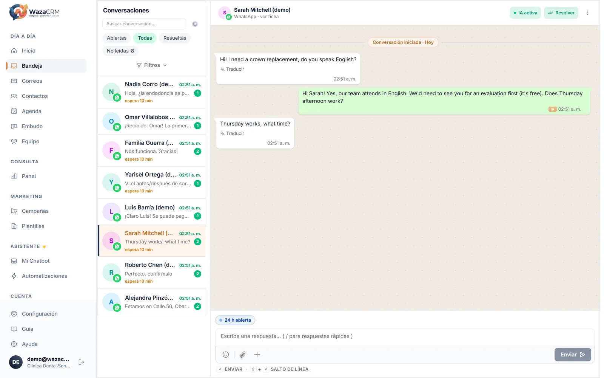
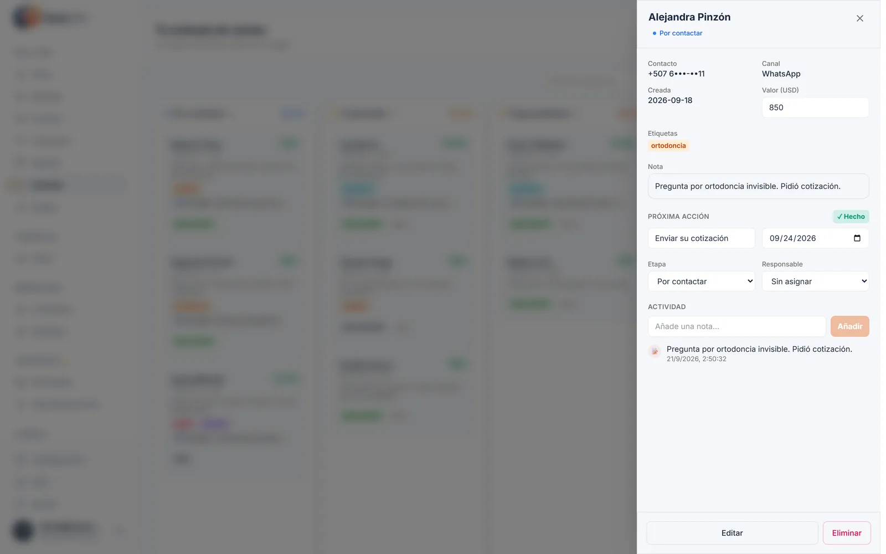
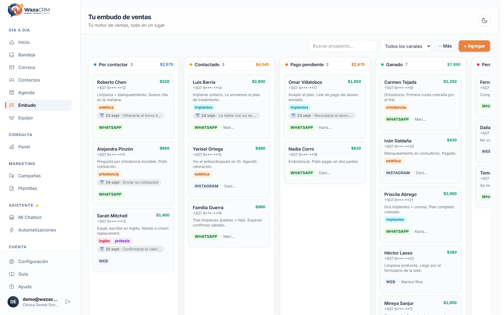

WazaCRM · Notas de versión
Lo que cambió en el CRM de WhatsApp durante septiembre, en orden de lo que vas a notar primero. Todo lo que está aquí ya está publicado y funcionando.
El hilo que une todo
Hasta ahora, cuando alguien decía «el bot le contestó mal a mi cliente», no quedaba nada que mirar. Las respuestas se generaban y se perdían: para averiguar de dónde había salido un precio había que leer la conversación entera y adivinar.
Todo lo de septiembre sale de ahí. El asistente ahora deja constancia de lo que hizo, distingue entre lo que le dijeron y lo que dedujo, y cuando no está seguro te lo pregunta en vez de inventarlo. Es la diferencia entre una herramienta que usas y una en la que confías.
Parte 1 · Lo que vas a ver al entrar
En cualquier conversación de la Bandeja, en el menú ⋯ Más, aparece el rastro completo: qué consultó, qué le devolvió esa consulta, qué contestó, cuánto tardó y por qué escaló.
Esa última línea es el punto entero: se ve de dónde salió un número, y si el asistente dijo algo distinto de lo que su propia consulta le devolvió. Antes eso era imposible de comprobar.
Tres decisiones que van con esto. El rastro no es una copia de la conversación: los mensajes siguen donde siempre. Se borra solo a los 90 días, porque son datos de los clientes de tu negocio y no tienen por qué vivir para siempre. Y lo sensible (cédula, pasaporte) se tacha antes de guardarse: ya está en la ficha con su control de acceso, copiarlo a un diagnóstico solo ampliaba la exposición.
El costo de IA de cada turno lo ve solo el dueño. Para quien atiende es ruido, y no le sirve de nada mientras contesta. El rastro sí lo ve todo el equipo: ya leen la conversación entera, esconderles por qué el asistente contestó lo que contestó solo les quita contexto.
Antes, todo lo que el asistente entendía durante una conversación entraba a la ficha sin distinguir entre «la persona lo escribió» y «me lo imaginé». Ahora tiene que declarar de dónde sacó cada dato, y el sistema decide qué hacer con él.
| De dónde salió | Qué pasa con el dato |
|---|---|
| La persona lo dijo o vino de un formulario | Entra a la ficha, como siempre. |
| Lo dedujo | Queda como sugerencia bajo el campo vacío: «Tu asistente no pudo confirmar esto», con el valor, el motivo y dos botones. |
| Se contradice | No entra. Un correo en el chat y otro distinto en el formulario no es «medio verdadero», es sin resolver, y tienes que verlo así. |
La regla de fondo: el asistente nunca califica su propia seguridad. A un modelo al que le pides puntuar cuánta confianza tiene, se pone nota alta, y se equivoca justo en la dirección que lo hace parecer útil. Solo declara qué vio; la decisión es del sistema y la última palabra es tuya.
Una sugerencia no es un fallo: muchas veces es el resultado correcto. Cuatro personas llamadas «Ana Pérez» las distingue un humano en tres segundos y un modelo no las distingue nunca.
Y hay un caso que rechaza la captura entera: un nombre deducido. Una ficha se llama por su nombre, y crearla con uno adivinado es el peor escenario posible, porque nadie que la abra después puede saber que está mal. Cuando pasa, el asistente sabe que tiene que preguntarlo.
Cuando alguien dice «lo hablo con mi esposa y te aviso el viernes», eso ya no se pierde en el chat. El asistente lo apunta en la ficha con fecha, y el motivo escrito con las palabras de esa persona.
El motivo es obligatorio de verdad. Mal: «seguimiento programado». Bien: «dijo que decide el viernes cuando hable con su esposa». Queda firmado como Asistente en el historial, así que se sabe quién lo puso.
El asistente NO manda nada solo. Apunta el seguimiento en la ficha y ese día te aparece en «Para hoy». Escribir o no escribir lo decides tú. Programar envíos automáticos cuesta dinero en cada plantilla y llega al teléfono de alguien que no lo pidió: un error ahí no se deshace. El asistente aporta el criterio y el motivo, no el envío.
La única señal que había era la tarjeta de «clientes esperando respuesta», y esa desaparece cuando vale cero, y con razón: es un pendiente. El efecto era que la pantalla callaba sobre el asistente el 90 % de los días, justo cuando te preguntas si aquello sirve para algo.
Ahora siempre dice algo, porque es un estado, no un pendiente. Con dos reglas que importan más de lo que parecen:
Decir «0 atendidas ✅» se lee como «todo en orden» y escondería un canal caído, que es el fallo más caro que existe. Dice «no ha tenido conversaciones hoy», en tono neutro.
Con gente esperando sería mentira, y contradiría la tarjeta de arriba, que habla del mismo hecho. Las dos cuentan los mismos traspasos, no dos consultas distintas.
Y el interruptor del asistente bajó a Inicio, pegado a esa línea: enterarte y poder actuar, en el mismo sitio. De paso salió de Inicio el inventario de módulos («Sabe hacer: Calificación Predictiva · Etiquetado Automático…»), que era la lista con la que la agencia cotiza, no algo que le diga nada a un dueño de negocio.
Tu equipo vive en WhatsApp Web todo el día. La curva de aprendizaje empieza en si reconoce la pantalla, así que la Bandeja adoptó su gramática visual: avatar grande, nombre y hora arriba, el mensaje y el globito verde abajo. Y nada más en esas dos líneas.

Antes esa fila apilaba hasta siete cosas: no leídos, Resuelta o Pendiente, tiempo de espera, si lo lleva un humano, el responsable y dos etiquetas. Siete, en una lista de cuarenta conversaciones. No se borró nada; se ordenó:
La fila se atenúa y le sale un doble check gris, que es como WhatsApp dice «esto ya está».
El tiempo de espera y quién lo lleva aparecen solo cuando hay algo que decir.
Se ven enteras al abrir la conversación. En la lista solo competían con el mensaje.
Y el cuadro de escribir es uno solo. «Nota interna» pasó al menú +, que es donde WhatsApp pone lo que no es escribir. Se contesta cien veces por cada nota que se toma. Como el interruptor ya no está a la vista, el modo nota ahora se anuncia en una barra ámbar con su propia salida: lo único que separa «esto lo lee mi equipo» de «esto le llega al cliente» es verlo.
Cada persona tiene su ficha: qué pidió, en qué etapa está, quién la atiende, cuándo toca volver y todo lo que se habló. El asistente la va llenando mientras conversa, sin que nadie transcriba nada de un chat a una hoja de cálculo.


Ninguna es titular. Todas se notan.
En modo claro, el texto de la burbuja del cliente era del mismo color que su fondo: había que seleccionarlo con el ratón para verlo.
Antes solo había iniciales sobre un color. Se recorta y se reduce en tu propio navegador, así que sube ya pequeña.
Once contactos se llamaban literalmente «.», y el punto ordena antes que las letras: era lo primero que se veía al abrir Contactos. Ahora manda el teléfono, que sí identifica a alguien. Los emoji siguen valiendo: es el nombre que esa persona eligió.
El manual se mostraba entero para todos y mandaba a secciones que tu cuenta no tiene. Un manual que te manda a un sitio inexistente es peor que no tener manual.
«1 seguimiento vencido» aparecía como lo primero de Inicio y el clic no llevaba a ninguna parte si tu cuenta no tenía Embudo. Ahora lleva a Contactos, que siempre existe.
El navegador metía un correo ajeno en «Mi perfil» al autocompletar.
Cuatro frases cortas ocupaban media pantalla. Inicio existe para contestar «qué tengo que hacer hoy», y todo lo que no conteste eso sobra.
El perfil y lo de la cuenta estaban repartidos. Ahora viven juntos.
Parte 2 · Para el equipo comercial
Todo prospecto que evalúa un asistente de IA llega con el mismo miedo, y casi nunca lo dice en voz alta: «le va a inventar un precio a mi cliente». Hasta septiembre, la respuesta a eso era una promesa. Ahora es algo que se enseña en pantalla.
Por qué cierra. Es verificable en dos minutos en una demo: abres una ficha y se ven las sugerencias con sus dos botones. No estás pidiendo un acto de fe, que es lo que pide todo el resto del mercado local.
Por qué importa. Es la objeción de segundo nivel, la que llega después de «¿y si se equivoca?», y la tiene el prospecto más serio, el que ya usó otra herramienta y se quemó. Ningún competidor local enseña esto.
Una regla al demostrarlo: usa siempre la cuenta de demostración, nunca la de un cliente real. Las conversaciones de un cliente son de sus clientes, y eso no se enseña en una reunión de ventas.
La estructura cambió a Starter, Growth y Scale, y cambian dos cosas a la vez: la mensualidad sube y la implementación pasa a cero. La mensualidad se come lo que antes se cobraba de montaje, y ese cero es ahora el argumento: llave en mano, sin desembolso inicial.
Si ya eres cliente, no te cambia nada. Tu plan y tu precio son los que pactaste. Los planes anteriores se archivaron (dejan de ofrecerse a clientes nuevos), pero quien está en ellos sigue exactamente donde estaba. No es un gesto: son filas nuevas en la base, no una reescritura de las viejas, justamente para que nadie amanezca con un precio que no firmó.
Va aquí para que nadie lo prometa en una reunión y haya que retractarse después.
El enlace de pago, el checkout y los recordatorios están construidos, pero cobrar depende de una pasarela a nombre del negocio del cliente y del trámite con su banco. Es un add-on que se cotiza aparte, y no se activa el día uno.
Funciona de punta a punta, pero se conecta caso por caso a mano hasta que Meta apruebe la revisión. Se vende como implementación asistida, no como una línea más del plan.
El canal existe en el sistema, pero exige el teléfono del dueño y una plantilla aprobada por Meta en su propia cuenta. Hasta que eso esté, el aviso va por correo.